第 22 期 · VLA 入门（续）· π0.5
VLA
π0 (2024-10) → π0.5 (2025-04) · 进没见过的家
可lip
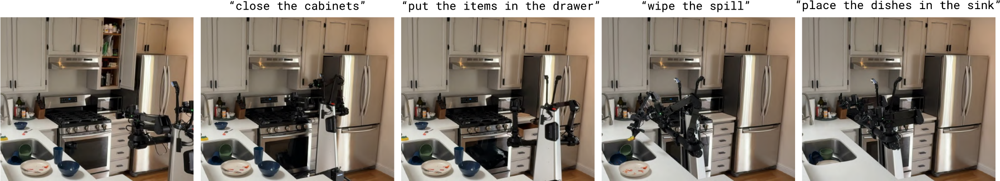
00回顾
π0 · 2024-10 · 上期第 13–16 页
回顾 π0数据 · 架构 · 配方，本期按这三条对比 π0.5
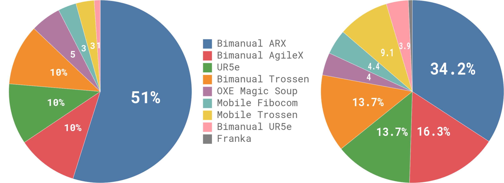
数据 · π0 Fig.4
9.03 亿时间步 · 7 种构型 · 68 类任务
全部在实验室采集，9.1% 开源 OXE；只有动作数据

架构 · π0 Fig.3
PaliGemma 3B + action expert 300M
flow matching 一次出 50 步；状态走 expert；只输出动作
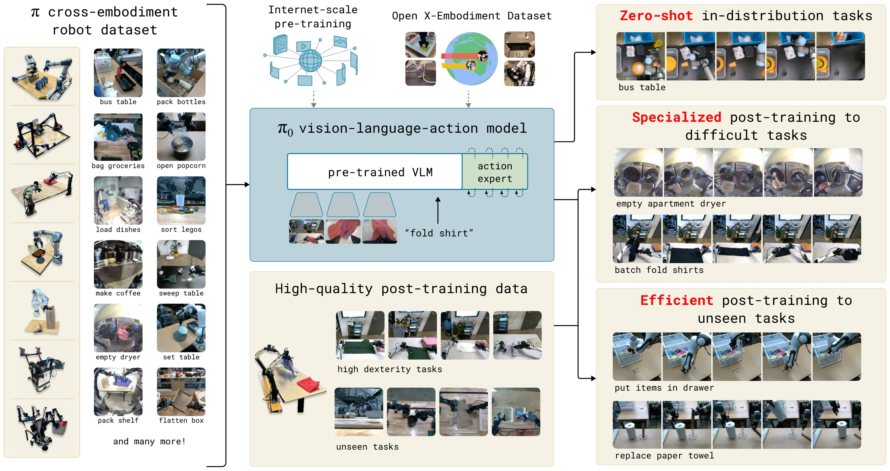
配方 · π0 Fig.1
预训练 700k 步 → 按任务后训练 5–100+ 小时
全程 flow matching；评测环境与训练数据同分布
π0.5 的目标
在训练没见过的家里，只给一句高层指令，完成 10–15 分钟的厨房 / 卧室清理
π0 2410.24164 · π0.5 2504.16054
01前置 · 概览
PHYSICAL INTELLIGENCE · 2025-01 → 2025-04
π0.5 之前的两步离散 token 训练，高层 / 低层分工
2025-01 · π0-FAST · arXiv 2501.09747 · → 第 4–7 页DCT + BPE 把 1 秒动作块压成约 30 个离散 token / 臂；自回归训练比 flow 版 π0 少 5× GPU 时数，语言跟随更好；一块要解码 30–60 个 token，4090 上约 750 ms
2025-02 · Hi Robot · arXiv 2502.19417 · → 第 8–10 页两个 PaliGemma 3B：高层 VLM 把开放指令翻成原子指令，低层 π0 执行；指令准确率比零样本 GPT-4o 高 40 个百分点以上
2025-04 · π0.5（本期）· arXiv 2504.16054 · CoRL 2025 · → 第 11 页起两件事合进一个模型：离散 token 预训练 + flow 后训练；同一套权重先出子任务、再出动作
2025-09 · openpi 发布 pi05_base当前能直接拿到的最强开源 VLA 基座；另有 pi05_droid / pi05_libero
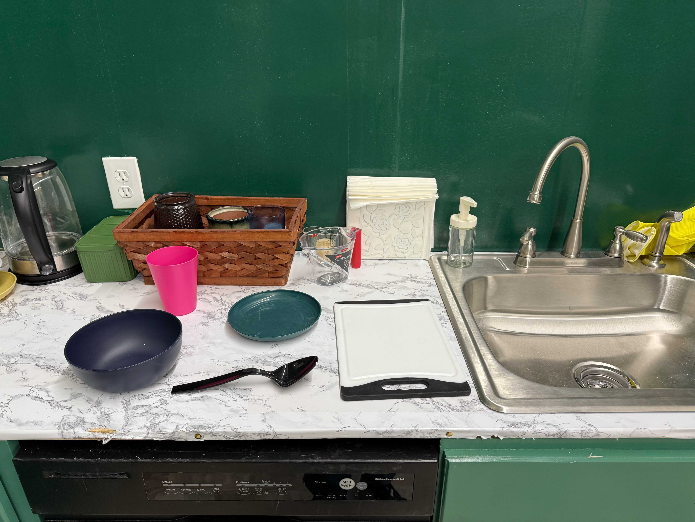
π0.5 附录 · 语言跟随评测的初始场景
作者 35 人 · Physical Intelligence
Kevin Black · Danny Driess · Karl Pertsch
Chelsea Finn · Sergey Levine · Karol Hausman
Chelsea Finn · Sergey Levine · Karol Hausman
作者按字母序；π0 的 24 人扩到 35 人
FAST 笔记 · Hi Robot 笔记 · openpi README
01前置 · π0-FAST · 团队
PHYSICAL INTELLIGENCE · UC BERKELEY · STANFORD · 2025-01 · ARXIV 2501.09747
π0-FAST 团队与背景把动作变回离散 token，让自回归 VLA 训得动
2024-10 · π0（上期）flow matching 出动作：推理快；训练收敛慢，语言跟随弱
2025-01 · π0-FAST（本页）DCT + BPE 压缩动作块；自回归训练少 5× GPU 时数；DROID 上第一个零样本部署的策略
同期开源 · FAST+ 通用 tokenizerHuggingFace physical-intelligence/fast；openpi 有 pi0_fast_base / pi0_fast_droid 权重
2025-04 · π0.5（本期）预训练全部用 FAST token，后训练再接 flow expert → 第 20 页
2025-05 · Knowledge Insulation · 2505.23705骨干用 FAST token 监督、flow expert 停梯度，成为 π0.6 / π0.7 的标准配方
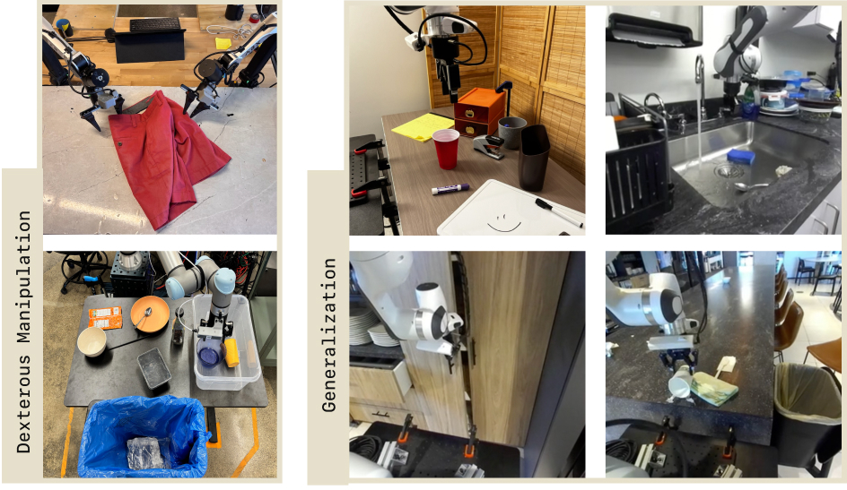
FAST Fig.1 · 灵巧任务 + DROID 零样本泛化
作者 9 人 · 共同一作
Karl Pertsch · Kyle Stachowicz
Pertsch 是上期 OpenVLA 的共同一作，Stanford → PI；Stachowicz 在 UC Berkeley。资深作者 Chelsea Finn · Sergey Levine
FAST 作者表 · openpi README · KI 2505.23705
01前置 · π0-FAST · 问题
FAST SEC.III · FIG.1 · 示例数值为自算
π0-FAST 要解决的问题token 按时间切，高频下相邻 token 几乎不变
老分桶法 · 同一个关节 1 秒内从 0.10 平滑转到 0.30 · 每维切 256 个桶，桶宽 2/256 ≈ 0.0078
50 Hz · 每步只变 0.004，约每两步才跨一个桶 → 50 个 token，一半是重复
140141141142142143143144144145145146146147… 共 50 个
5 Hz · 每步变 0.05，跨 6 个桶 → 5 个 token，全都不同
140147153160166
FAST 的看法 · 同一段轨迹的 DCT 系数 · 「从 0.10 到 0.30」只在 c1 里出现一次
乘 γ 取整 →k0k1000× 48 → BPE →2–3 个 token
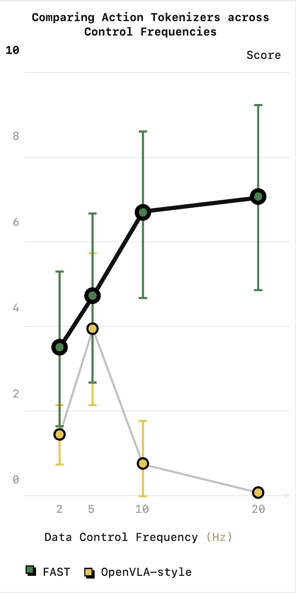
FAST Fig.1 · 分数 vs 控制频率
学成「抄上一个」
下一个 token 与上一个相同 → 损失 ≈ 0、梯度 ≈ 0；有信息的位置只剩偶尔 +1
token 数与频率无关
采样率提高只多出高频里的 0，低频系数不变 → ≈30 token / 秒 / 臂
一句话
按时间切，冗余变成重复的 token；按频率切，冗余在变换里被吸收，每个 token 都有信息
FAST · Sec.III 玩具实验 · Fig.1 右 · 关节示例与桶编号为自算
01前置 · π0-FAST · 方法
ACTION TOKENIZATION · DCT → 量化 → 展平 → BPE
π0-FAST 方法把 1 秒的动作块压成几十个 token
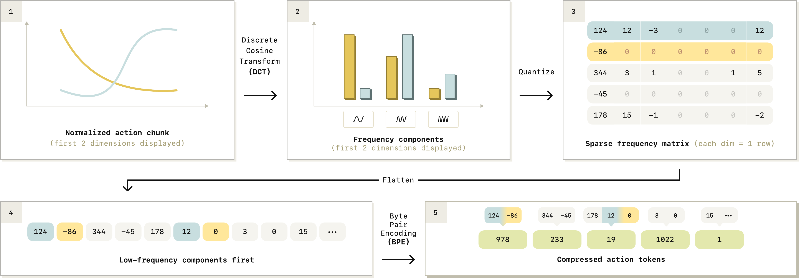
FAST Fig.4 · 五步：归一化 → 每维 DCT → 乘 γ 取整 → 低频优先展平 → BPE
上一页的例子走一遍这五步：50 个几乎重复的时间域数值 → 两个大系数 + 48 个 0 → 两三个 token
700 → 53
叠 T 恤 · 14 维 · 50 Hz · 1 秒块 · 13.2×
≈30 token / 秒 / 臂
与频率基本无关 · DROID 105 → 29 · 收桌 140 → 28
2 个超参
γ = 10 · 词表 1024 · 全部可逆 · 只训 BPE 词表，几分钟
FAST+
100 万条 1 秒块训的通用版 · 单 / 双臂 / 移动 · 5–50 Hz
FAST · Sec.III · Sec.IV · Alg.1 · Table I
01前置 · π0-FAST · 结果
FIG.1 · FIG.6 · FIG.11 · RTX 4090 · 估读
π0-FAST 结果与代价训练快 5 倍、更听指令；推理慢 7 倍
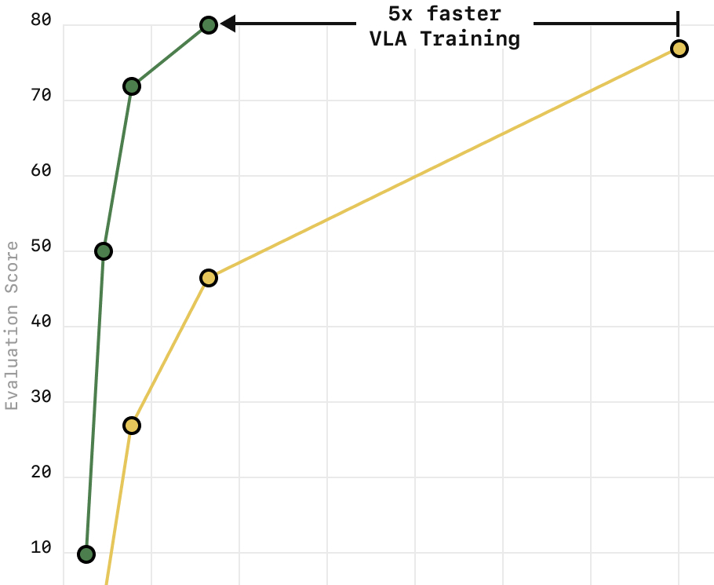
FAST Fig.1 · 评测分数 vs 训练步数
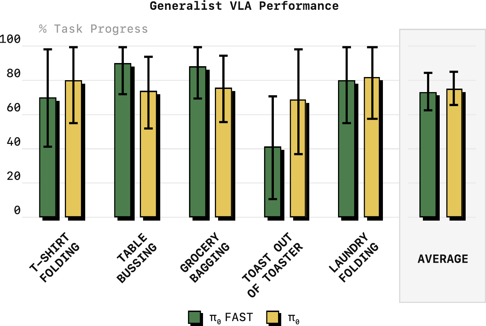
FAST Fig.11 · 通用模型 · π0-FAST vs flow 版 π0 · 五任务
≈0 → ≈85%
收桌子 20 Hz · naive → FAST；叠 T 恤 ≈0 → ≈65%
5× 少
GPU 时数 · π0-FAST 五任务平均 ≈ flow 版 π0
DROID 零样本
三所大学 · 首个不微调直接部署的 DROID 策略
代价 · 推理 · 4090
750 ms vs ≈100 ms：解码 30–60 个 token 全过 2B 骨干；flow 版只跑 300M expert 10 步
FAST · Fig.1 · Fig.6 · Fig.11 · Sec.VI-E · 柱状图无数值，为估读
01前置 · Hi Robot · 团队
PI · STANFORD · BERKELEY · 2025-02 · ARXIV 2502.19417
Hi Robot 团队与背景两个 PaliGemma 3B：高层出原子指令，低层 π0 执行
2022-04 · SayCan（上期提过）LLM 给技能打分选下一步；看不到图像
2024-03 · YAY Robot · Lucy Shi · Stanford人在机器人做任务时实时用语言纠正；高层出指令、低层执行，高层是从零训的小模型
2024-10 · π0（上期）低层
2025-02 · Hi Robot（本页）高层换成 PaliGemma 3B VLM，低层换成 π0；用大 VLM 合成用户对话来训高层
2025-04 · π0.5（本期）高层、低层合成同一个模型 → 第 18 页
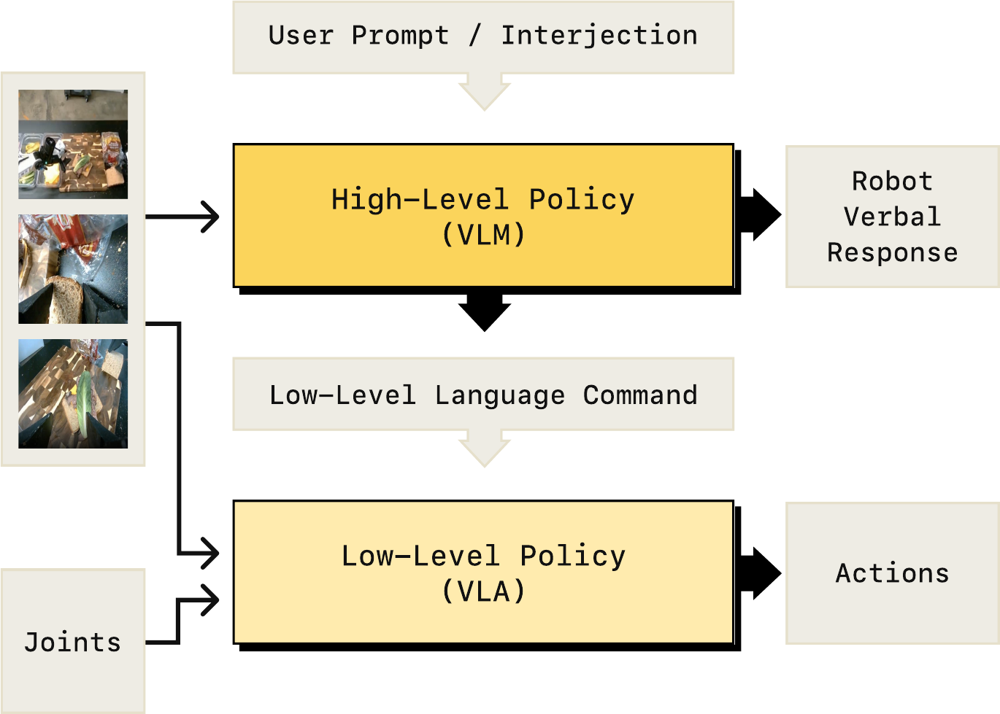
Fig.2 · 高层 VLM 出原子指令 + 回话 · 低层 π0 出动作
作者 15 人 · 一作
Lucy Xiaoyang Shi · Stanford · PI
资深作者 Chelsea Finn · Sergey Levine；Karl Pertsch、Brian Ichter、Danny Driess 三篇都在
发表 · 开源
ICML 2025 · 未开源
Hi Robot 作者表 · YAY Robot 2403.12910
01前置 · Hi Robot · 方法
FIG.3 · APPENDIX A · 动作是真的，对话是反推的
Hi Robot 的数据怎么来动作没法伪造；会导致这个动作的那句话，可以让大模型反推
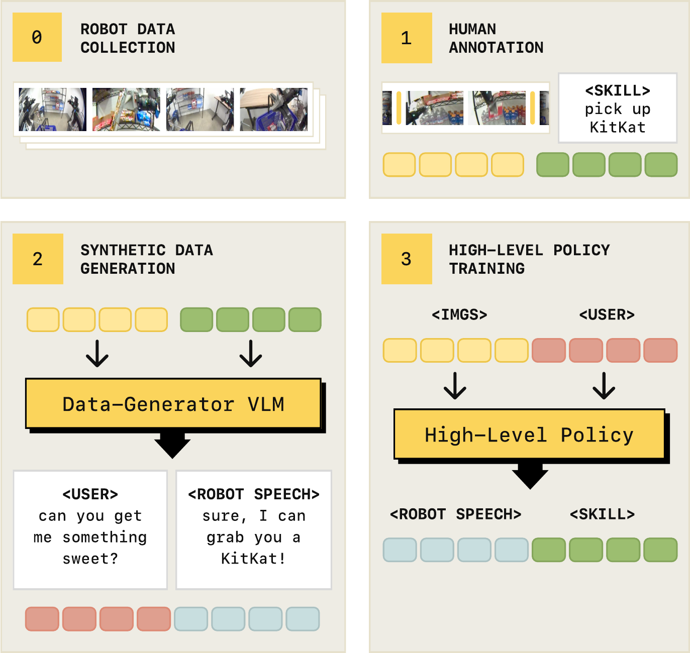
Fig.3 · 四步
⓪ 采遥操作示范 · D_demo人带着机器人做完整任务；每条只有一个粗标签「make a sandwich」，没有步骤标注，没有用户的话
① 人工切段 · D_labeled切成 1–3 秒的小段，每段一句原子指令「pick up one piece of lettuce」；小幅纠正动作用规则自动抽成「move the right arm to the left」
② 大 VLM 反推对话 · D_syn喂给它：画面 + 这段的原子指令 + 前面做过的步骤。问它：用户说了什么，机器人此刻才会做这个 → 输出用户的话 + 机器人的回话
③ 训两个模型 · 各训各的高层 PaliGemma 3B：画面 + 用户的话 → 回话 + 原子指令，数据 D_syn + D_labeled；低层 π0：原子指令 + 画面 → 动作，数据 D_labeled + D_demo
例：画面在拿生菜，指令「pick up the lettuce」→ 用户「能给我加点生菜吗」，机器人「好的」；用世界知识：用户「我乳糖不耐」→ 机器人「好，我不放奶酪」
用户的话否定任务现场纠正特定约束回话确认澄清错误处理
动作一点没变
合成的只有语言这一侧 · 高层没见过动作，低层没见过用户的话
每 1 s 重跑
用户一开口立刻重跑 · Whisper 转文字 · 回话经 TTS 播出
为什么非要合成
示范里没有对话，人工写太贵；去掉 D_syn 指令准确率掉 46 个百分点
Hi Robot · Sec.4.3 · Appendix A · Fig.3 · Fig.7
01前置 · Hi Robot · 结果
FIG.5 · 3 任务 × 20 次 · 盲评 · 估读
Hi Robot 结果与局限微调的 3B 高层，好于零样本 GPT-4o
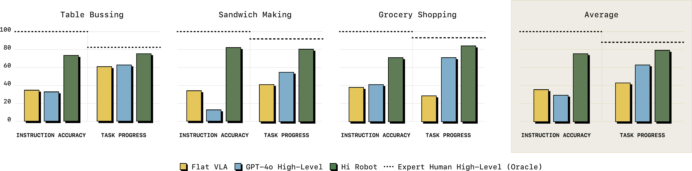
Fig.5 · 指令准确率 IA · 任务进度 TP · 虚线是人类专家做高层
≈73% vs ≈27%
指令准确率 · Hi Robot vs GPT-4o 做高层；flat π0 ≈33%
≈77 / 60 / 42%
任务进度 · Hi Robot / GPT-4o / flat；人类专家 ≈85%
−46 / −19 pts
指令准确率 · 去掉合成数据 / 同样数据训成 flat
局限 · 作者自述
高层没有记忆；高层和低层各训各的，高层不知道低层能不能做、做没做成 → π0.5 合成一个模型
Hi Robot · Fig.5 · Fig.7 · Fig.8 · Sec.6 · 柱状图无数值，为估读
02π0.5
PHYSICAL INTELLIGENCE · 2025-04 · ARXIV 2504.16054
π0.5 的目标在训练没见过的家里，完成 10–15 分钟的清理任务
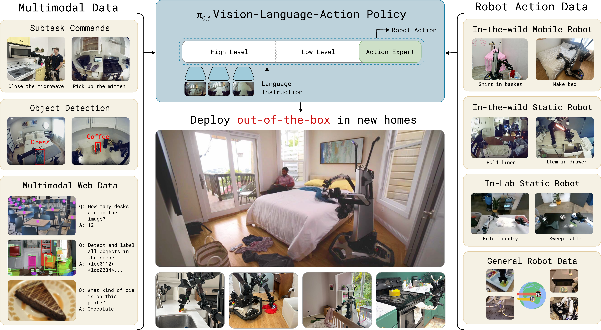
Fig.1 · 左：多模态数据 · 右：机器人动作数据 · 中：一个策略，直接部署到新家
约 400 h
移动操作机器人 · 家务 · 约 100 个家庭
97.6%
预训练样本不是“移动机器人做家务”
10–15 min
只给一句高层指令 · 整间厨房或卧室
全部新环境
3 个真实家庭 + mock 厨房 / 卧室 · 训练都没见过
π0.5 · Sec.I · Fig.1
02π0.5 · 平台
MOBILE MANIPULATORS · 50 HZ · PD 跟踪
机器人平台两种移动双臂平台，18–19 维状态 / 动作
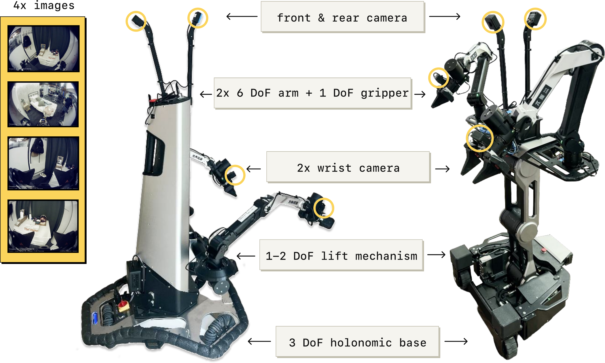
Fig.5 · 相机 ×4 · 双臂 · 升降 · 全向底盘
| 部件 | 数值形态 |
|---|---|
| 相机 ×4 | 前、后、左右腕 · RGB；高层用 4 路，低层用腕 + 前 3 路 |
| 双臂 | 2 × 6 DoF + 2 个夹爪 |
| 底盘 | 全向 · 3 维速度（平移 2 + 旋转 1） |
| 躯干升降 | 1–2 维 |
| 合计 | 18 / 19 维，两种平台各一 |
| 控制 | 50 Hz 目标位姿 + 底盘速度 → PD 控制器；无轨迹规划、无碰撞检测 |
π0 的移动平台 3 路相机，状态 / 动作补零到 18 维；π0.5 多一路后视相机，只给高层推理用
π0.5 · Sec.IV-E · Fig.5
02π0.5 · 数据 ①
PRE-TRAINING MIXTURE · MM / ME / CE / HL / WD · POST + VI
数据 · 五类来源π0 只有一类动作数据；π0.5 五类，三类不来自目标机器人
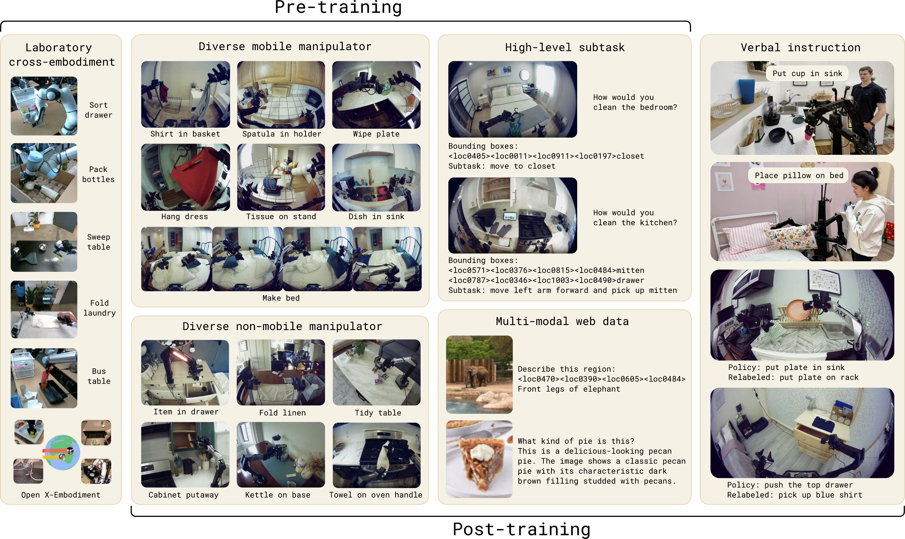
Fig.4 · 预训练五类 · 后训练加 VI、去 CE
| 来源 | 内容 | 与目标的关系 |
|---|---|---|
| MM | 移动机器人 · 家务 · 约 400 h · 约 100 家 | 目标机器人 · 目标任务 · 2.4% |
| ME | 单 / 双臂固定机械臂 · 更多家庭 | 不同本体 · 同类环境 |
| CE | 实验室跨本体 · π0 数据扩展版 + OXE | 不同环境 · 不同任务 |
| HL | 人工标注：边界框 + 子任务文本 | 高层监督 · 输出是文本 |
| WD | 网页图说 / VQA / 检测 · CapsFusion · COCO · Cambrian-7M · PixMo · VQAv2 | 语义知识 · 没有动作 |
| VI | 语言遥操作示范 · 后训练新增 → 第 22 页 | 高层示范 · 占 MM 高层样本 11% |
5 + 1 类
预训练五类 · 后训练加 VI、去 CE
同一序列
动作、子任务、边界框、VQA 答案全是 token，一个模型一起训
优势
泛化靠迁移：目标机器人做家务的样本只占 2.4%，其余来自别的机器人和网页
π0.5 · Sec.IV-C · Sec.IV-D · Fig.4
02π0.5 · 数据 ②
FIG.8 · FIG.10 · MOCK HOMES · 4 任务 × 10 次 / 策略 · 估读
数据 · 优势的证据地点数越多越好；别的机器人的数据比“见过测试环境”更重要
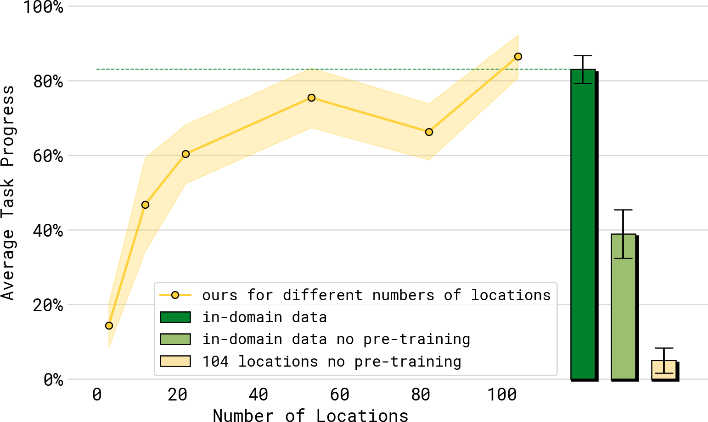
Fig.8 · 只改 MM 数据的地点数 3 → 104 · 右侧三根柱是对照
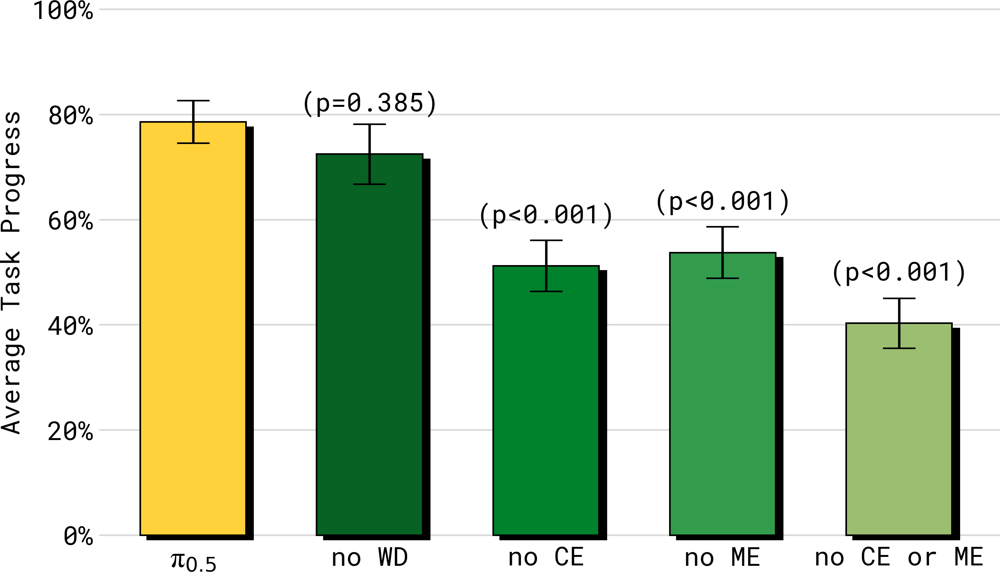
Fig.10 · 去掉某一类数据
≈13% → ≈87%
地点数 3 → 104 · 4 任务平均进度
≈ 在测试家训过
104 地点、没见过测试家 ≈ 直接用测试家数据训（≈82%）
优势 · 没有 co-training 就没有泛化
只用 104 地点、无预训练 ≈5%；只用测试家、无预训练 ≈38%
≈78% → ≈50–53%
去掉 CE 或 ME，p<0.001；去掉 WD 不显著（≈73%）
π0.5 · Sec.V-B · Sec.V-C · Fig.8 · Fig.10 · 柱状图无数值，为估读
02π0.5 · 数据 ③
FIG.9 · FIG.11 · LANGUAGE FOLLOWING · 5 选 1 · 估读
数据 · 网页数据管陌生物体5 件物品选 1 件；目标放得比干扰物远，不听指令约 20%
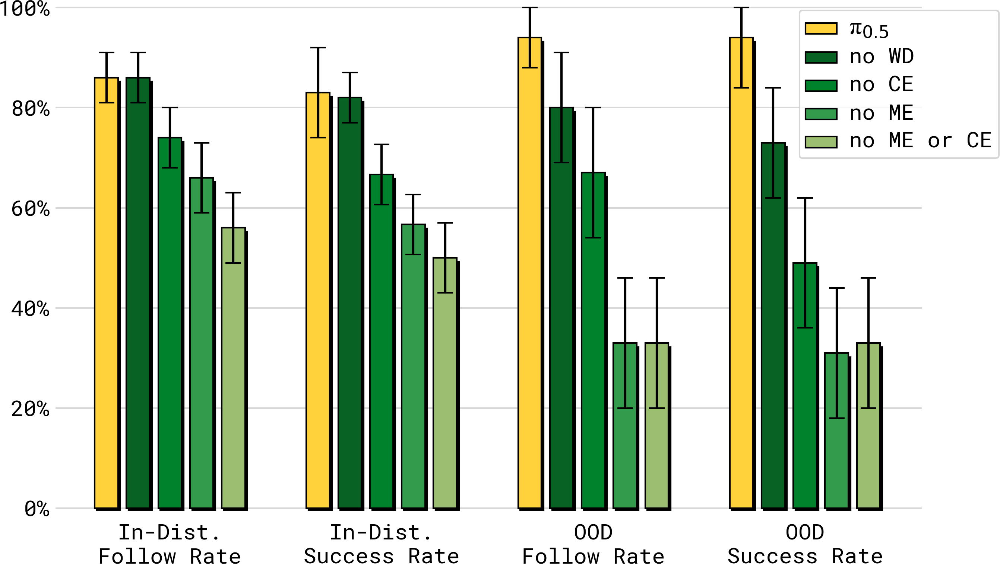
Fig.11 · 去掉某一类数据 · 分布内 / 分布外物体
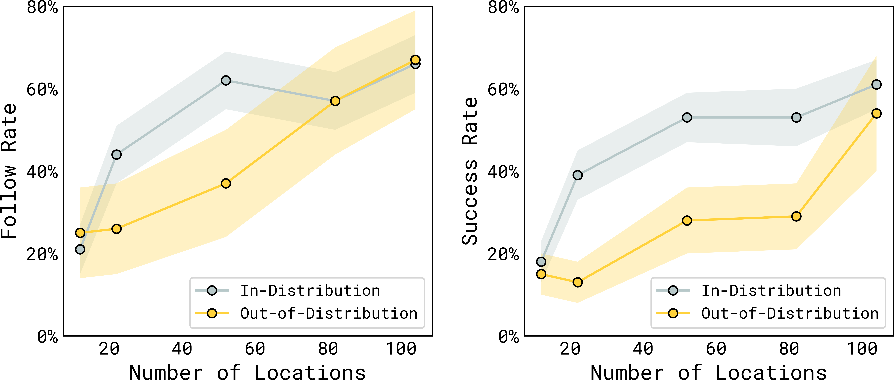
Fig.9 · 地点数 vs 语言跟随
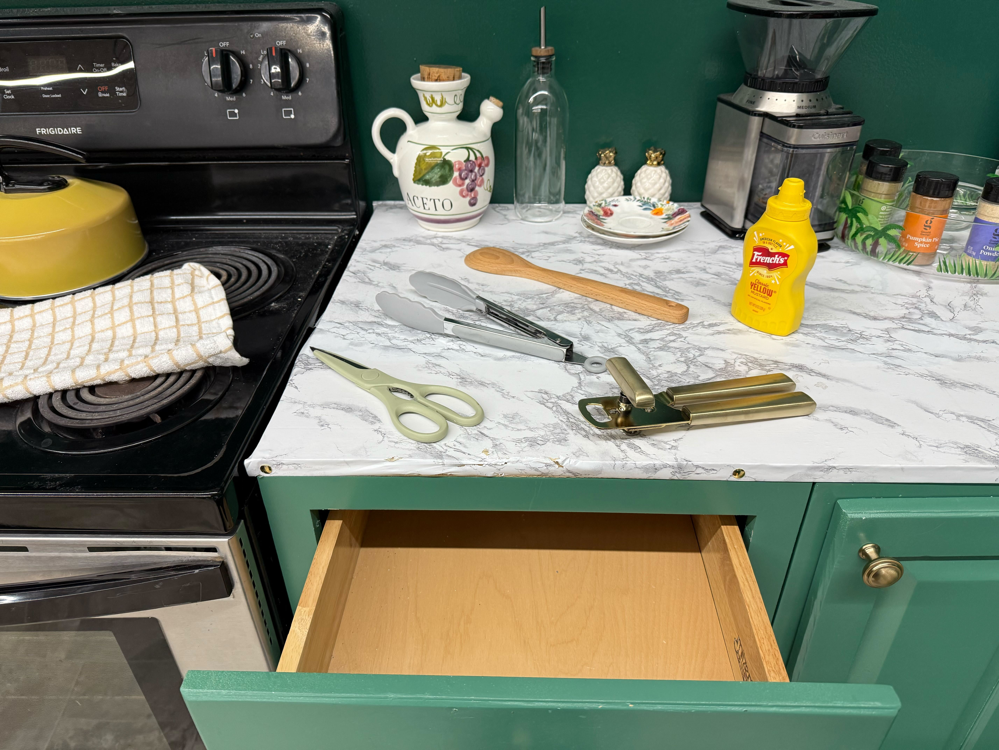
分布内 · 抽屉
分布内 · 水槽
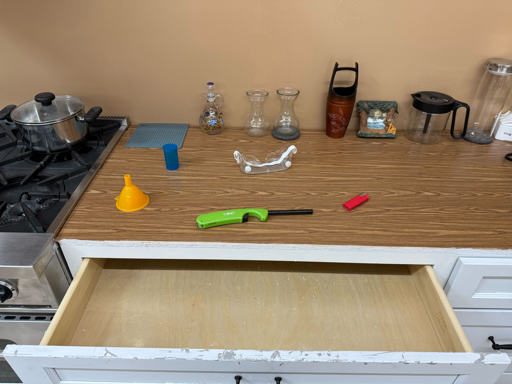
分布外 · 漏斗 / 药瓶 / 护目镜
≈93% → ≈72%
分布外物体成功率 · 去掉网页数据 no WD；分布内物体不受影响
≈25% → ≈67%
分布外物体跟随率 · 地点数 12 → 104
优势
网页图文补的是物体类别：训练没见过的类别，也能按指令拿对
π0.5 · Sec.V-B · Sec.V-C · Appendix C · Fig.9 · Fig.11 · Fig.14
02π0.5 · 架构 ①
ARCHITECTURE · 尺寸与 π0 相同
π0.5 架构骨干和 expert 尺寸不变；输出多了文本，输入多了离散状态
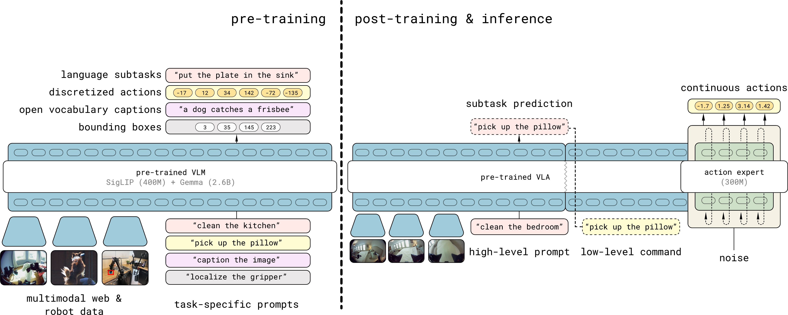
Fig.3 · 左：预训练，全部输出都是离散 token · 右：后训练与推理，加 action expert
VLM 权重 · PaliGemma 3B · 输入图像 3–4 张（每张 256 token）+ 指令 + 离散化的 qt（文本 token）
VLM 权重 · 输出 · 自回归文本：子任务 / 图说 / 边界框 · FAST 动作 token
action expert 300M · 后训练时加入带噪动作 50 token → 速度场 vθ
π0.5 · Sec.IV-A · Appendix E · Fig.3
02π0.5 · 架构 ②
π0 VS π0.5 · ATTENTION MASK
架构 · 与 π0 逐项对比两种动作表示互不可见，VLM 侧仍是标准 VLM
| π0 | π0.5 | |
|---|---|---|
| 骨干 | PaliGemma 3B | 相同 · SigLIP 400M + Gemma 2.6B |
| action expert | 300M · 从零，全程参与 | 相同尺寸 · 后训练时才加入 |
| 本体状态 qt | 线性投影 → expert | 离散成文本 token → VLM |
| 输出 | 只有连续动作 | 文本（子任务 / VQA / 框）+ FAST 动作 token + 连续动作 |
| 流时间 τ | 拼进动作嵌入 | 单独 MLP → adaptive RMSNorm，注入 expert 每一层 |
| 注意力 | 图文 / qt / 动作 三块 | 前缀 · FAST 动作 · expert 动作；两种动作互不可见，VLM 不看 expert |
| 相机 | 3 路 | 高层 4 路 · 低层 3 路 |
优势
VLM 侧没有新模态、没有新 loss：网页数据、子任务文本、动作 token 用同一套权重、同一个交叉熵训；expert 只在后训练接上
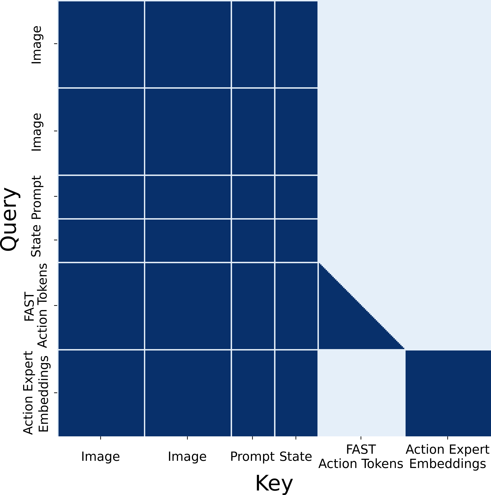
Fig.17 · 注意力掩码 · 深色 = 可见
π0.5 · Sec.IV-A · Appendix E · Fig.17
02π0.5 · 架构 ③
HIERARCHICAL INFERENCE · 高层 → 低层
同一个模型先出子任务，再出动作高层文本，低层动作，一套权重
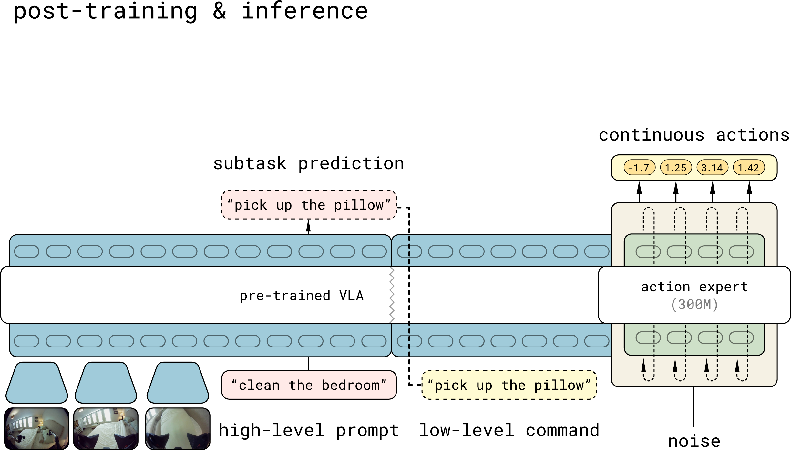
Fig.3 右半 · 推理：先采样子任务文本，再以它为条件去噪出动作
分解 · 动作只依赖子任务 ℓ̂，不看总任务 ℓ
πθ(at:t+H, ℓ̂ | ot, ℓ) = πθ(at:t+H | ot, ℓ̂) · πθ(ℓ̂ | ot, ℓ)
① 高层 · 4 路相机 + 总任务 ℓ“clean the bedroom” → 自回归采样子任务 ℓ̂ “pick up the pillow”
② 低层 · 3 路相机 + ℓ̂10 步去噪 → 50 步动作块，执行
③ 每个动作块重来高层频率低于低层；同一个 transformer、同一套权重
| 谁出子任务 | 模型数 |
|---|---|
| π0-HL（上期） | 高层另一个 VLM + π0，共 2 个 |
| Hi Robot | 两个 PaliGemma 3B，各自训练 |
| π0.5 | 1 个：子任务预测和动作是同一个模型的两种输出 |
π0.5 · Sec.IV-A · Sec.IV-E · Fig.3
02π0.5 · 架构 ④
FIG.13 · 同一个低层，换不同的高层 · 估读
架构 · 优势的证据自己出子任务，好于人类专家和零样本 GPT-4
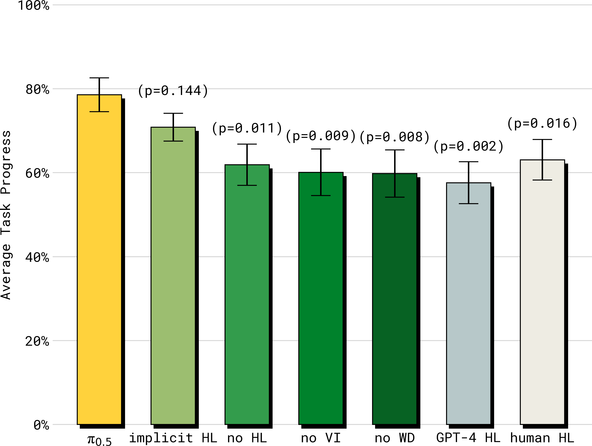
Fig.13 · 低层全部用 π0.5，只换高层
| 高层 | 含义 | 平均进度 |
|---|---|---|
| π0.5 | 模型自己出子任务 | ≈78% |
| implicit HL | 训练含 HL 数据，推理不出子任务 | ≈70% · p=0.144 |
| human HL | 人类专家实时下子任务 | ≈63% · p=0.016 |
| no HL | 训练也不含 HL 数据 | ≈62% |
| no VI / no WD | 去掉语言遥操作 / 网页数据 | ≈60% / ≈60% |
| GPT-4 | 零样本，给任务描述 + 常用标签表 | ≈57% · p=0.002 |
优势
高层用机器人数据训过才管用；不显式出子任务也有 ≈70%，收益大半来自把子任务预测数据放进训练
π0.5 · Sec.V-E · Fig.13 · 柱状图无数值，为估读
02π0.5 · 训练 ①
PRE-TRAINING 280K · POST-TRAINING 80K
训练 · 先离散、后 flow预训练当普通 VLM 训，后训练再接 action expert
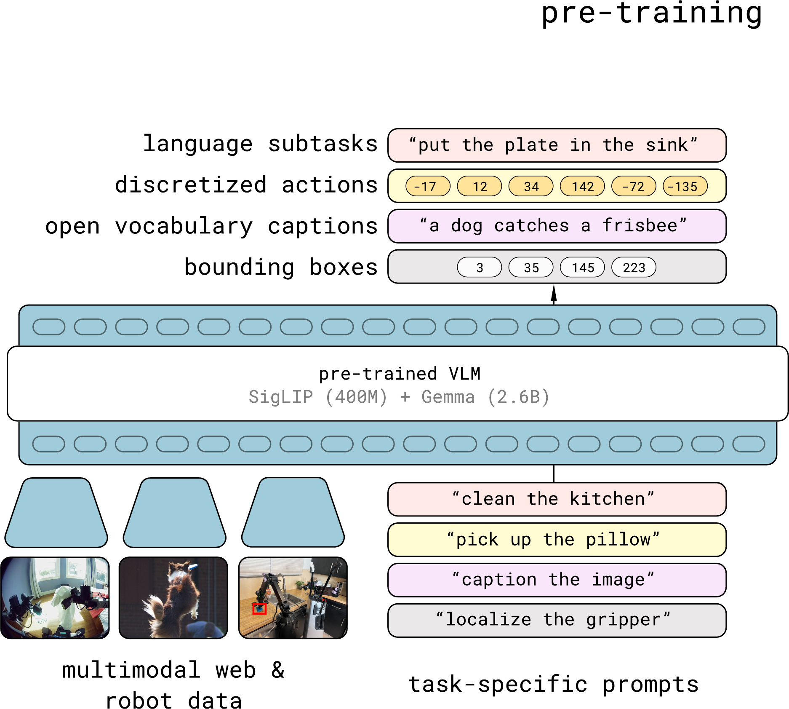
Fig.3 左半 · 预训练：四种输出都是 token
| 预训练 | 后训练 | |
|---|---|---|
| 步数 | 280k | 80k |
| 动作表示 | FAST 离散 token · α = 0 | FAST token + flow expert · α = 10 · expert 随机初始化 |
| 损失 | 文本交叉熵（含动作 token） | 交叉熵 + α × flow matching |
| 数据 | MM + ME + CE + HL + WD | MM + ME（成功、不超长）+ WD + HL（多环境）+ VI；去掉 CE |
| 目的 | 广：吸收异构来源 | 专：家庭移动操作 + 实时推理 |
式 (1) · 两项相加，α 决定 expert 参不参与
𝔼[ H(x1:M, fℓθ(ot, ℓ)) + α ‖ ω − at:t+H − faθ(aτ,ωt:t+H, ot, ℓ) ‖² ]
π0：全程 flow，700k 步，再按单个任务后训练 5–100+ 小时；π0.5：后训练面向“家庭移动操作”这一整个领域
π0.5 · Sec.IV-B · Sec.IV-C · Sec.IV-D · Eq.1
02π0.5 · 训练 ②
FIG.12 · FIG.16 · 同一批跨本体数据 · 可比步数 · 估读
训练 · 优势的证据与 π0、与“π0 + 混合配方”比
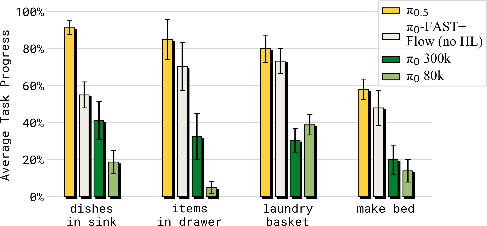
Fig.12 · mock 家庭 4 任务
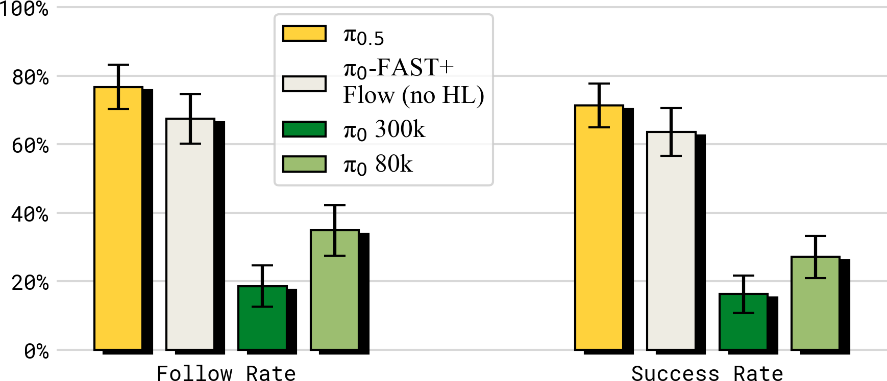
Fig.16 · 语言跟随
≈92 · 55 · 42 · 18%
dishes in sink · π0.5 · π0-FAST+Flow · π0 300k · π0 80k
≈77% vs ≈18%
跟随率 · π0.5 vs π0 300k；π0-FAST+Flow ≈68%
优势 · 两段各拿一头
离散 token 预训练：训得快、听得懂指令；flow 后训练：10 步去噪、连续精细动作
π0 到 300k 步仍差
π0-FAST+Flow 用同一混合配方但无 HL / WD，介于两者之间
π0.5 · Sec.V-D · Appendix C · Fig.12 · Fig.16 · 柱状图无数值，为估读
02π0.5 · 训练 ③
VERBAL INSTRUCTION · 后训练新增的监督
后训练新增：语言遥操作人只发子任务指令，动作由已训好的低层做
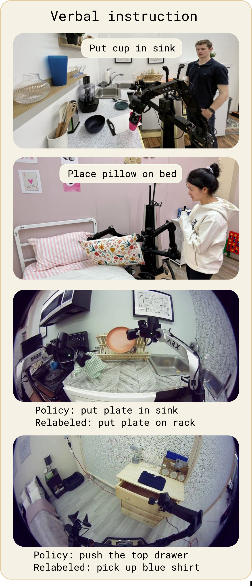
Fig.4 · VI 列
① 低层策略在跑已训好的低层策略控制机器人；人不碰遥操作手柄
② 专家看场景，实时下子任务“Put cup in sink” → 机器人执行；做完再给下一条
③ 记录的是高层示范(观测, 总任务) → 子任务 的配对；策略实际做的事可以重标（Policy: put plate in sink → Relabeled: put plate on rack）
④ 用量很小只占 MM 高层样本约 11%；后训练时与 HL、WD 一起训
≈78% → ≈60%
去掉 VI · p=0.009 · Fig.13
优势
高层示范不需要遥操作动作：人只动嘴，采得快、便宜，模型学到的是“下一步该做什么”
π0.5 · Sec.IV-D · Sec.V-E · Fig.4 · Fig.13
02π0.5 · 实验 ①
FIG.6 · APPENDIX B · 全部是训练没见过的环境
实验 · 评测环境与打分mock 房间做对照实验，真实家庭做最终评测
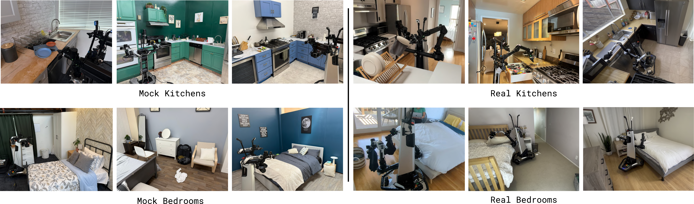
Fig.6 · 左：mock 厨房 / 卧室 · 右：真实厨房 / 卧室
4 个任务
dishes in sink 8 分 · items in drawer 4 分 · laundry basket 3 分 · make bed 5 分
10 次 / 任务
40 次 / 策略 · 交替执行 · 双侧 t 检验
一句指令
“place the dishes in the sink” · 2–5 分钟 · 子任务模型自己出
进度 %
按 rubric 得分 / 满分 · 放进一半盘子 ≈ 50%
π0.5 · Sec.V · Appendix B · Fig.6
02π0.5 · 实验 ②
FIG.7 · 3 个真实家庭 · 两种机器人 · 估读
实验 · 真实家庭三个家各做厨房 + 卧室任务
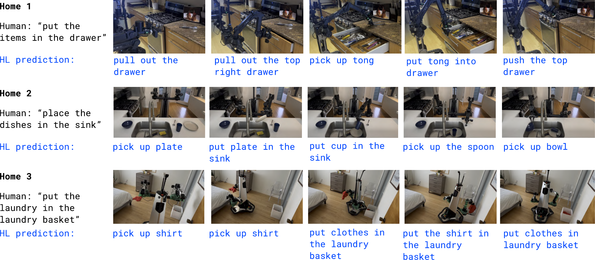
Fig.7a · 蓝字是模型自己预测的子任务
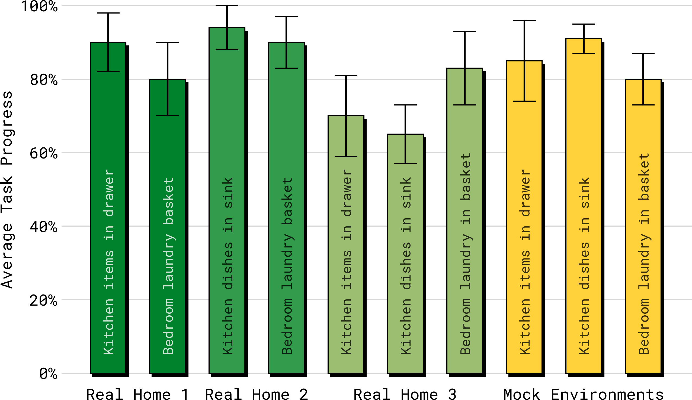
Fig.7b · 每任务 10 次的平均进度
≈65–94%
真实家庭各任务进度 · 与 mock 环境相当
2–5 min
多阶段任务 · 只给高层指令
结论
端到端 VLA 第一次在训练没见过的真实家庭里完成多阶段操作
π0.5 · Sec.V-A · Fig.7 · 柱状图无数值，为估读
02π0.5 · 小结
DATA · ARCHITECTURE · RECIPE
π0.5 小结三条各改了什么，各带来什么
数据 · 第 13–15 页 · Fig.8
一类 → 五类来源；目标机器人的家务数据只占 2.4%
优势：104 个地点、没见过测试家 ≈ 在测试家训过；不做 co-training ≈5%；网页数据管陌生物体
架构 · 第 16–19 页 · Fig.3
尺寸不变；输出加文本，状态改离散；同一个模型先出子任务再出动作
优势：自己出子任务 ≈78%，高于人类专家 ≈63% 和零样本 GPT-4 ≈57%
训练 · 第 20–22 页 · Fig.12
先 280k 步离散 token，再 80k 步接 flow expert；后训练新增语言遥操作
优势：训得快、听得懂指令，又保住 10 步去噪的实时性；π0 训到 300k 步仍差
局限 · 论文自述 + 我读出来的
评测任务仍是训练里有的类别，泛化的是环境和物体；每步先解码子任务文本，延迟高于 π0；上下文短、没有记忆 → 下期 π0.6 的事
π0.5 · Sec.VI · 调研笔记 Sec.4
2024-10 · 上期
π0
一类动作数据 · flow matching · 50 步动作块 · 评测环境与训练同分布
→
2025-04 · 本期
π0.5
五类数据 co-training · 先离散后 flow · 子任务 → 动作 · 进没见过的家
下期：π0.6 · 强化学习 × VLA
上手：openpi · pi05_base 权重 + 训练代码